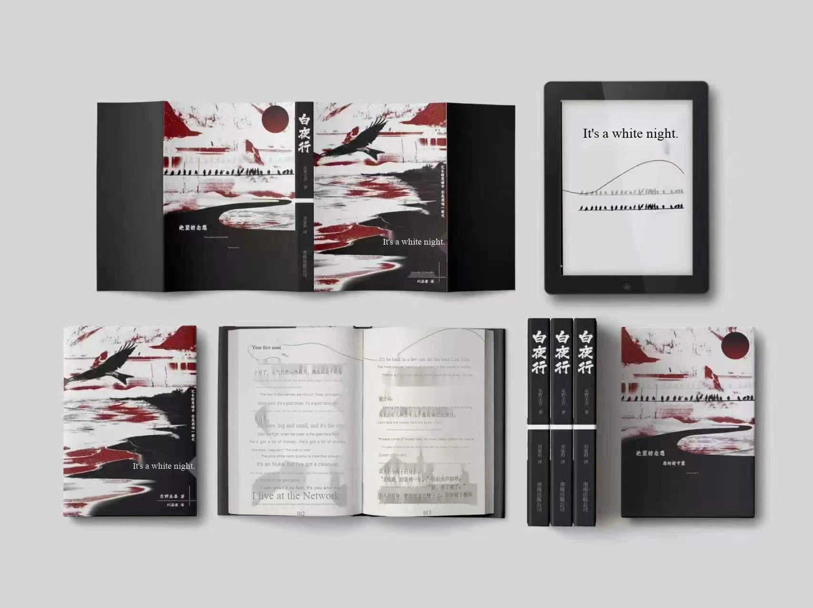
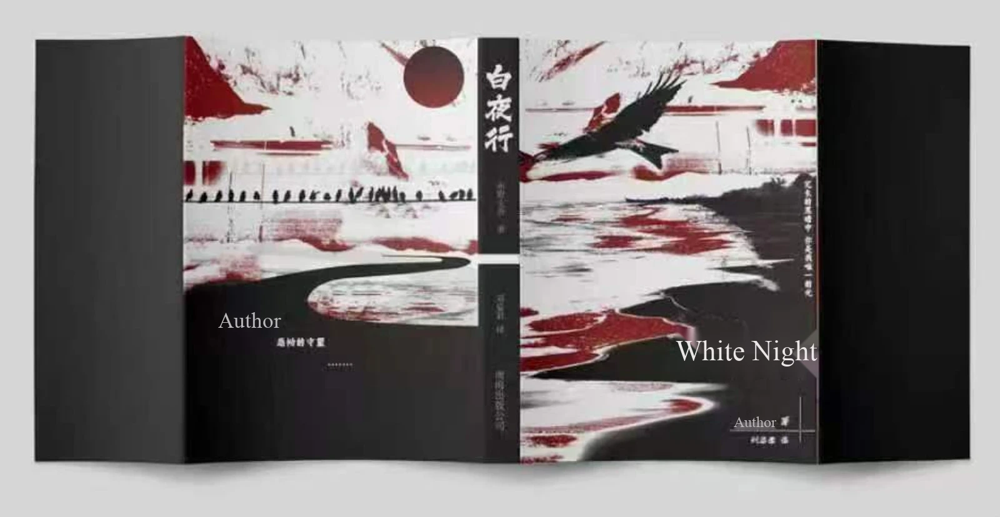
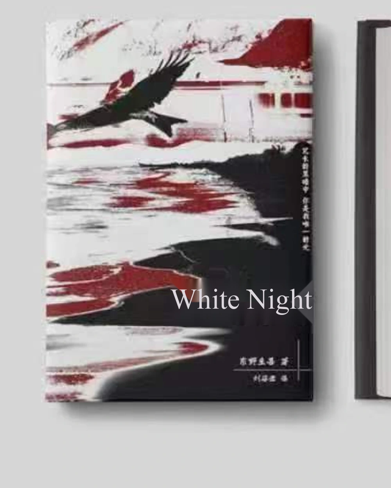
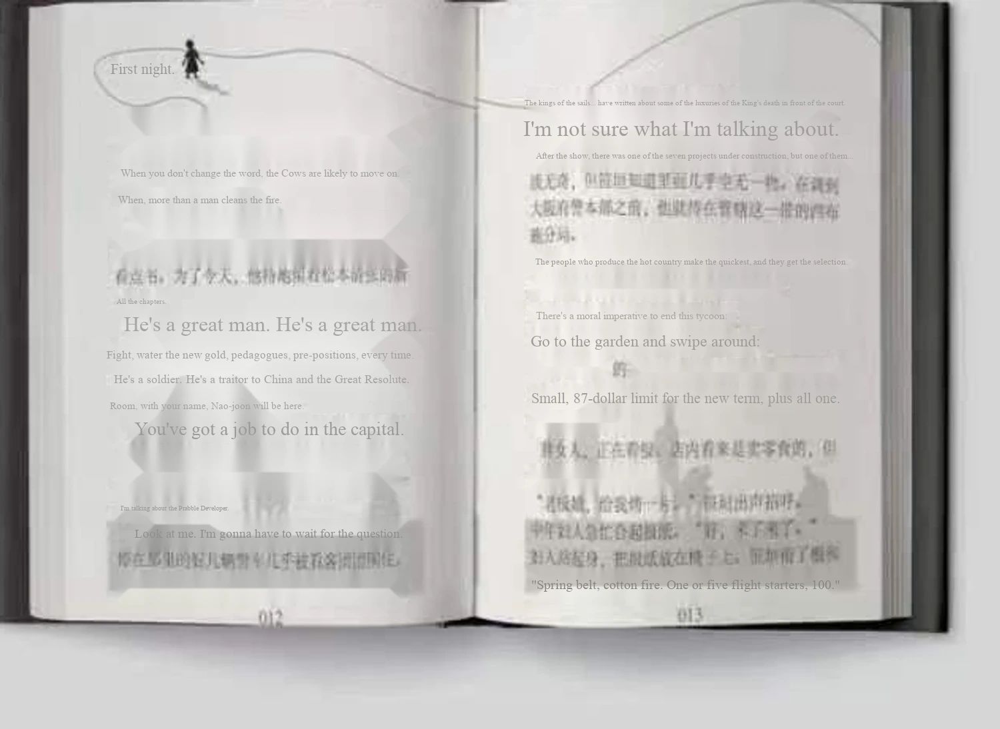
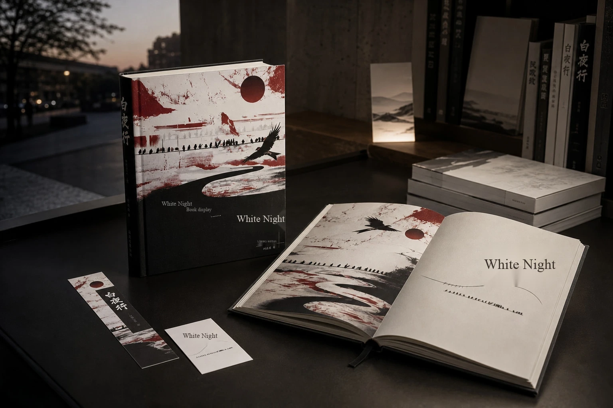
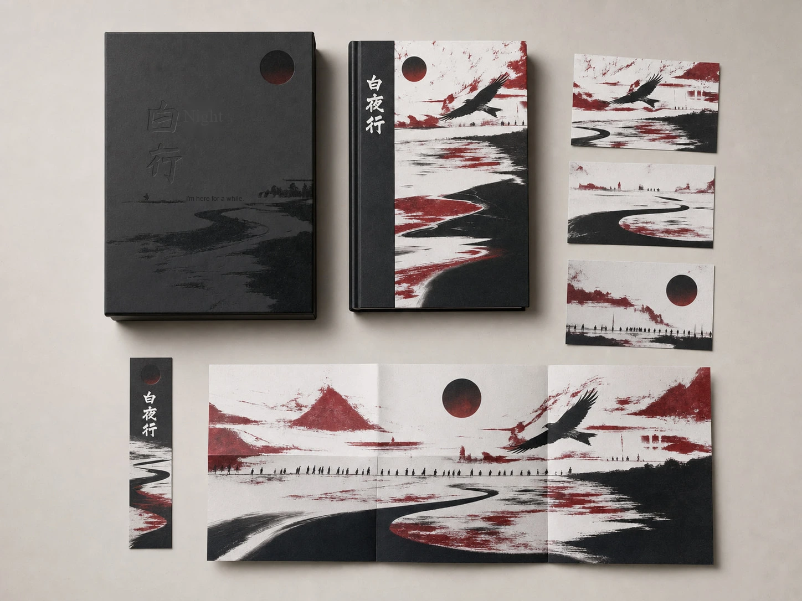

Book design · Self-initiated
White Night
Day, night and a red sun describe a relationship that cannot be looked at directly.
Concept, key visual, book design and extensions, without depicting the characters.
A red sun, a bird, a horizon and a black path run through the cover, interiors, bookmark and poster.

Problem
Without character stills, how can the story be remembered?
We used no character portraits.
The relationship and its fate became symbols we could reuse. Black and white keep the distance, dark red marks the moments of emotion, and the figures appear only as silhouettes on the horizon.
Four symbols
The red sun, the black bird, the horizon and the path stand for truth, freedom, waiting and connection.



One image, many surfaces
The jacket unfolds as one horizontal image.
Folded, the cover, spine and back each still stand on their own. Interiors use less red, and the digital edition keeps only the title and the horizon.
Silhouette / Tension / Distance / Coexistence

In the hand and on the desk
Mockups show how the book feels in the hand and on the desk. They test paper, how the spine reads and how the book sits on a display table.
A collector's set
Slipcase, postcards and bookmarks share the same graphic proportions and crops.
This set is a concept extension and was not produced.

Outcome
One story,
one visual grammar.
The same symbols and colour rules run through the jacket, interiors, the digital edition and the collector pieces.
View other projects ↗